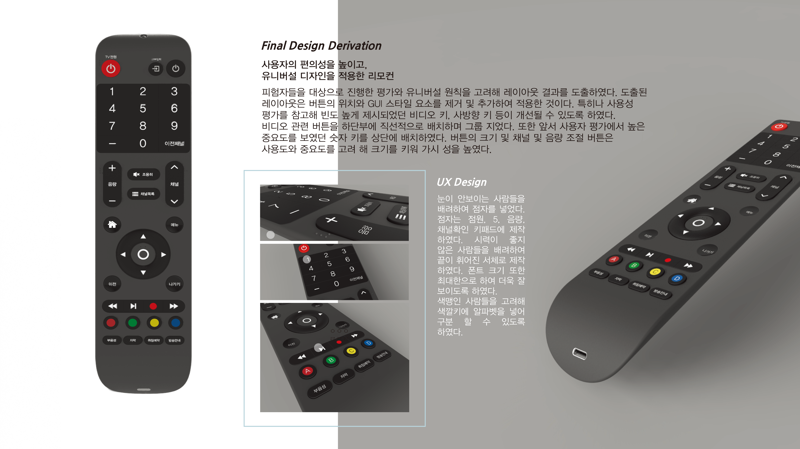
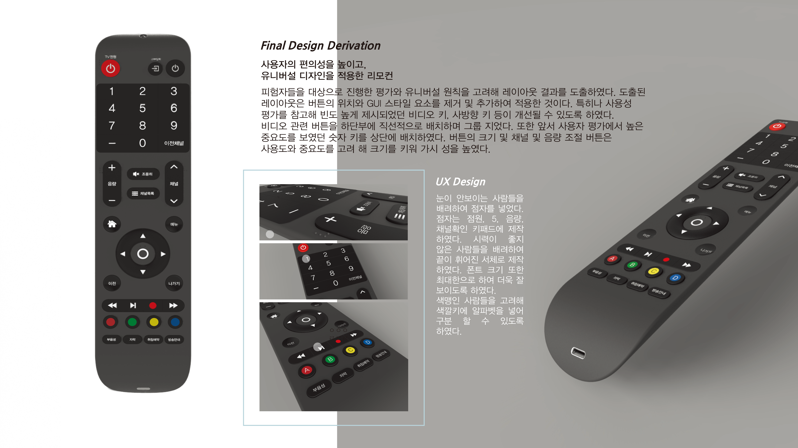

2017. 03 - 2017. 07
현대의 리모컨은 TV의 발전과 함께 계속 진화해 나가고 있어, 기존의 리모컨은 사람들에게 만족을 주기 어렵습니다. 각기 다른 손의 크기, 편안함, 그립감의 만족도, 원하는 디자인이 다르기 때문입니다. 그리하여, 다수가 만족할 수 있는 평균적이고 대중적인 리모컨을 조사하고 연구하여, 그에 맞는 리모컨을 개발해야 한다는 필요성을 느꼈습니다. 인터페이스 수업을 통하여 리모컨을 배우고, 그 내용을 바탕으로 조사, 연구하여 새로운 리모컨을 개발하였습니다.

 
